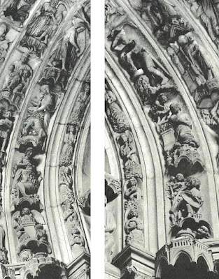
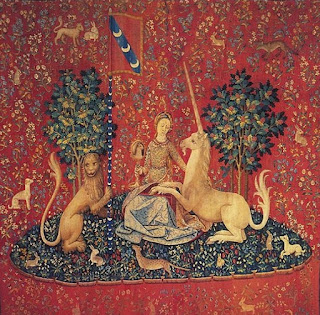
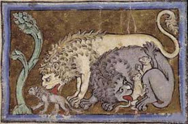
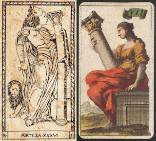
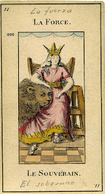
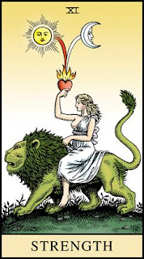
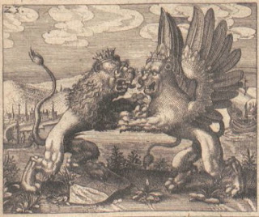
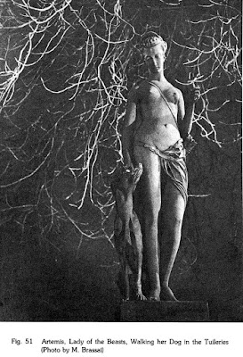
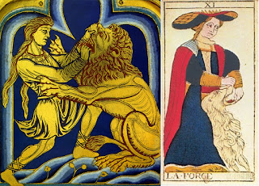

Strength
The card corresponding to the modern "Strength," French "La Force," and Italian "La Forza" was in the early Italian lists mostly called "Fortezza," although "Forza," "Forte", and the Latin "Fortitudo" are also known. All these words apply equally to moral strength, i.e. courage, and physical strength. However because the only other virtue cards are of justice and temperance, both of which are in the category of "cardinal virtues," and together they make up the three moral virtues of the four cardinal virtues (prudence being an intellectual virtue), we are led to the conclusion that the card refers to the cardinal virtue which in English is called Fortitude, which unlike its Latin and Italian equivalents "Fortitudo" usually means only the moral and not the physical virtue. But how was this card conceived in the 15th century?
The Concept of Fortitude
At the time of the early cards the most accepted analysis of the cardinal virtues was that of St. Thomas Aquinas in his Summa Theologiae. It in turn was a synthesis of Aristotle, whose work had recently been translated into Latin, and Christian tradition. The characterization of Fortitude as a "cardinal" virtue came from the latter. As I have related in my post on Justice, Christianity got its four "cardinal virtues" from Cicero (De Inventione II, 153), who in turn got them from Plato (Republic 427e)-, but substituting the \prudence for Plato's wisdom:. In the 15th century the Christian version was most familiarly known through St. Thomas Aquinas, for whom (Summa Theologiae, II-II [Second Part of the Second Part], q. (question) 47, a (article) 2, translated 1920 by the Fathers of the English Dominican Province, online at http://www.newadvent.org/summa/3047.htm):
...it is clear that prudence is wisdom about human affairs: but not wisdom absolutely, because it is not about the absolutely highest cause, for it is about human good, and this is not the best thing of all.)The best thing, of course, was God, the object of contemplative wisdom.
For all of these thinkers, the virtue Cicero called Fortitudo was a quality of the mentis - mind - or animo - soul or spirit - rather than the body.
For Plato this virtue in the state was that of the warrior class, which took its orders from the Guardians, corresponding to Wisdom. In the individual the virtue was associated with the part of the soul called θυμοειδές, thumoeides, “high spirited”, from the root thumos, associated with breath and blood. Plato said (Republic, 442b-c, translation of http://www.perseus.tufts.edu/hopper/text?doc=Perseus%3Atext%3A1999.01.0168%3Abook%3D4%3Asection%3D442b and following, Greek of http://www.perseus.tufts.edu/hopper/text?doc=Perseus%3Atext%3A1999.01.0167%3Abook%3D4%3Asection%3D442b and following):
Brave (ανδρειον, andreion], too, then, I believe, we call each individual by virtue of that part in him when, namely, their high-spirit (θυμοειδές, thumoeides) preserves in the midst of pains and pleasures the rule handed down by the reason as to what is or is not to be feared or not.The Greek andreion is from andreia, literally “manliness,” a word that applied to women and things as well as to men. In English (and similarly in other modern languages) the word is translated as "bravery" or “courage.”
This definition is somewhat vague, but.it apparently means that courage has to do with what it is rational to fear, such as those who would attack the state or the individual. In that case it would seem rational to defend oneself. But what of death, which might result from such defense? Is it rational to fear it as well, and if so which is more important? It is up to the wisdom contained in the rational part of the soul, or of the state, to make that decision.
For Aristotle the virtue was also andreia. He defined it, as he did other virtues, as a mean between extremes (Nicomachean Ethics Book 2, chapter 7, W. D. Ross, trans. with facing Greek at https://www.mikrosapoplous.gr/aristotle/nicom2b.htm):
With regard to feelings of fear and confidence courage is the mean; of the people who exceed, he who exceeds in fearlessness has no name (many of the states have no name), while the man who exceeds in confidence is rash, and he who exceeds in fear and falls short in confidence is a coward.The word translated as "confidence" here, thrasos, can also be translated as "boldness." It is up to the rational faculty to decide whether death or retreat is preferable. This is made clear in Book 2, chapter 6:
Virtue, then, is a state of character concerned with choice, lying in a mean, i.e. the mean relative to us, this being determined by a rational principle, and by that principle by which the man of practical wisdom would determine it.By "practical wisdom" Aristotle meant what Cicero would later call prudentia.
Now we can turn again to Aquinas (II-II, q. 123). He wrote a lot about Fortitude; but he is the most important, because his teachings had the highest prestige in the 15th century. I will try to pick out the most important excerpts, highlighting the most important points and giving a summary of them at the end.
After reminding us that Fortitude is one of the four cardinal virtues (q. 123 Preamble), he argues that courage is a virtue in article 1, for which I again quote the Latin (http://www.corpusthomisticum.org/sth3123.html, followed by the 1920 revised translation at (http://www.newadvent.org/summa/3123.htm. I thank Andrea Vitali for drawing attention to this section in his essay "La Forza," http://www.letarot.it/page.aspx?id=123; since it is rather long, I put in bold the most important part for present purposes:
...ad virtutem humanam pertinet ut faciat hominem et opus eius secundum rationem esse. Quod quidem tripliciter contingit. Uno modo, secundum quod ipsa ratio rectificatur, quod fit per virtutes intellectuales. Alio modo, secundum quod ipsa rectitudo rationis in rebus humanis instituitur, quod pertinet ad iustitiam. Tertio, secundum quod tolluntur impedimenta huius rectitudinis in rebus humanis ponendae. Dupliciter autem impeditur voluntas humana ne rectitudinem rationis sequatur. Uno modo, per hoc quod attrahitur ab aliquo delectabili ad aliud quam rectitudo rationis requirat, et hoc impedimentum tollit virtus temperantiae. Alio modo, per hoc quod voluntatem repellit ab eo quod est secundum rationem, propter aliquid difficile quod incumbit. Et ad hoc impedimentum tollendum requiritur fortitudo mentis, qua scilicet huiusmodi difficultatibus resistat, sicut et homo per fortitudinem corporalem impedimenta corporalia superat et repellit. Unde manifestum est quod fortitudo est virtus, inquantum facit hominem secundum rationem esse.
(...it belongs to human virtue to make man good, to make his work accord with reason. This happens in three ways: first, by rectifying reason itself, and this is done by the intellectual virtues; secondly, by establishing the rectitude of reason in human affairs, and this belongs to justice; thirdly, by removing the obstacles to the establishment of this rectitude in human affairs. Now the human will is hindered in two ways from following the rectitude of reason. First, through being drawn by some object of pleasure to something other than what the rectitude of reason requires; and this obstacle is removed by the virtue of temperance. Secondly, through the will being disinclined to follow that which is in accordance with reason, on account of some difficulty that presents itself. In order to remove this obstacle fortitude of the mind is requisite, whereby to resist the aforesaid difficulty, even as a man, by fortitude of body, overcomes and removes bodily obstacles. Hence it is evident that fortitude is a virtue, in so far as it conforms man to reason.We see here an enumeration of the three moral virtues represented in the tarot, all of which require the "intellectual virtues" for their right application. We also see the distinction between "fortitude of body" verses "fortitude of the mind," the latter of which is the cardinal virtue, even if there is an analogy between them.
Aquinas also distinguished another type of of fortitude. Besides physical strength and the cardinal virtue, there is a generic kind of fortitudo that applied to following any of the virtues. He writes (Ibid, II-II, q. 123, a. 2)
...nomen fortitudinis dupliciter accipi potest. Uno modo secundum quod absolute importat quamdam animi firmitatem. Et secundum hoc est generali virtus, vel potius conditio cujus libet virtutis; quia sicut Philosophus dicit, ad virtutem requiritur firmiter et immobiliter operari. Alio modo potest accipi fortitudo; secundum quod importat firmitatem animi in sussinendis, et repellendis his, in quibus maxime difficile est firmitatem habere, scilicet in aliquibus periculis gravibus. Unde Tullius dicit, quod fortitude est considerata periculorum susceptio et laborum perpessio. Et sic fortitudo ponitur specialis virtus, utpote materiam determinatam habens.To be virtuous is to be of strong and immovable character in a variety of ways: temperance requires fortitude in resisting temptations of the flesh, food, and drink; justice requires fortitude in being fair in one's dealings with others; and so on. The cardinal virtue, on the contrary has to do with situations where it is difficult to remain firm, such as "certain grave dangers". We might also think of the courage not to divulge secrets under extreme conditions, i.e. situations of unusual "bearing of toils," even when one is not actually in grave danger.
(... the term 'fortitude' can be taken in two ways: the first as simply denoting a certain firmness of mind, and in this sense it is a general virtue, or rather a condition of every virtue: since as the Philosopher [Aristotle] notes, it is requisite for every virtue to act firmly and immovably. Second, fortitude can be taken in the sense of firmness of mind in bearing and dealing with those things in which it is most difficult to remain firm, as happens in certain grave dangers, for which Cicero [De inventori 2, 54] states that "fortitude consists in a deliberate facing of dangers and bearing of toils." So Fortitude in this sense is a special virtue, having its own determinate matter.)
Fortitude not only requires "remaining firm" but also on some occasions even to attack the source of danger (article 3):
ad virtutem fortitudinis pertinet removere impedimentum quo retrahitur voluntas a sequela rationis. Quod autem aliquis retrahatur ab aliquo difficili, pertinet ad rationem timoris, qui importat recessum quendam a malo difficultatem habente, ut supra habitum est, cum de passionibus ageretur. Et ideo fortitudo principaliter est circa timores rerum difficilium, quae retrahere possunt voluntatem a sequela rationis. Oportet autem huiusmodi rerum difficilium impulsum non solum firmiter tolerare cohibendo timorem, sed etiam moderate aggredi, quando scilicet oportet ea exterminare, ad securitatem in posterum habendam. Quod videtur pertinere ad rationem audaciae. Et ideo fortitudo est circa timores et audacias, quasi cohibitiva timorum, et moderativa audaciarum.”There seems to me an error in translation regarding the word aggredi. What he means is "attack" and not "withstand". At the end of this passage Aquinas says that fortitude is not only about curbing fear, but "moderating daring"; while it sometimes is required to attack the source of difficulties, such attack should be done "moderately". This is in keeping with Aristotle, for whom the danger opposite from cowardice is recklessness. He will further explain what he means in article 6.
(It belongs to the virtue of fortitude to remove any obstacle that withdraws the will from following the reason. Now to be withdrawn from something difficult belongs to the notion of fear, which denotes withdrawal from an evil that entails difficulty, as stated above (I-II:42:3; I-II:42:5) in the treatise on passions. Hence fortitude is chiefly about fear of difficult things, which can withdraw the will from following the reason. And it behooves one not only firmly to bear the assault of these difficulties by restraining fear, but also moderately to withstand [aggredi, elsewhere in this Question translated "attack"] them, when, to wit, it is necessary to dispel them altogether in order to free oneself therefrom for the future, which seems to come under the notion of daring. Therefore fortitude is about fear and daring, as curbing fear and moderating daring.).
There is then the extreme case, where the danger is that of personal death (article 4):
... ad virtutem fortitudinis pertinet ut voluntatem hominis tueatur ne retrahatur a bono rationis propter timorem mali corporalis. Oportet autem bonum rationis firmiter tenere contra quodcumque malum, quia nullum bonum corporale aequivalet bono rationis. Et ideo oportet quod fortitudo animi dicatur quae firmiter retinet voluntatem hominis in bono rationis contra maxima mala, quia qui stat firmus contra maiora, consequens est quod stet firmus contra minora, sed non convertitur; et hoc etiam ad rationem virtutis pertinet, ut respiciat ultimum. Maxime autem terribile inter omnia corporalia mala est mors, quae tollit omnia corporalia bona, unde Augustinus dicit, in libro de moribus Eccle., quod vinculum corporis, ne concutiatur atque vexetur, laboris et doloris; ne auferatur autem atque perimatur, mortis terrore animam quatit. Et ideo virtus fortitudinis est circa timores periculorum mortis.The quotation from Augustine is better translated as "Lest this bond with the body should be shaken and disturbed, the soul is shaken with the fear of toil and pain; lest it should be lost and destroyed, the soul is shaken with the fear of death" (http://gnosis.org/library/democ.htm).
(Now it behooves one to hold firmly the good of reason against every evil whatsoever, since no bodily good is equivalent to the good of the reason. Hence fortitude of soul [animi, also meaning "of spirit"] must be that which binds the will firmly to the good of reason in face of the greatest evils: because he that stands firm against great things, will in consequence stand firm against less things, but not conversely. Moreover it belongs to the notion of virtue that it should regard something extreme: and the most fearful of all bodily evils is death, since it does away all bodily goods. Wherefore Augustine says (De Morib. Eccl.[ xxii]) that "the soul is shaken by its fellow body, with fear of toil and pain, lest the body be stricken and harassed with fear of death lest it be done away and destroyed." Therefore the virtue of fortitude is about the fear of dangers of death.
In article 5 Aquinas says that it is not only in battle as a soldier that one must overcome the fear of death but also in private affairs, if reason dictates exposure to the danger of death. His examples are helping a sick friend even at the risk of exposure to a deadly disease and undertaking a dangerous journey for some "godly purpose."
In article 6 he raises the important consideration that even though the exercise of fortitude sometimes requires attack, it is principally concerned with endurance rather than aggression:.
Hence the fortitude of martyrs of the faith, among whom some could have attacked their aggressors but saw that reason dictated endurance rather than attack. Likewise, it seems to me, when one has been attacked by another, reason may dictate enduring the attack rather than attacking. Here there is the example of Jesus, who did not resist his crucifixion....sicut supra dictum est, et philosophus dicit, in III Ethic., fortitudo magis est circa timores reprimendos quam circa audacias moderandas. Difficilius enim est timorem reprimere quam audaciam moderari, eo quod ipsum periculum, quod est obiectum audaciae et timoris, de se confert aliquid ad repressionem audaciae, sed operatur ad augmentum timoris. Aggredi autem pertinet ad fortitudinem secundum quod moderatur audaciam, sed sustinere sequitur repressionem timoris. Et ideo principalior actus est fortitudinis sustinere, idest immobiliter sistere in periculis, quam aggredi.
(As stated above [Article 3], and according to the Philosopher [Aristotle, Ethic. iii, 9], "fortitude is more concerned to allay fear, than to moderate daring." For it is more difficult to allay fear than to moderate daring, since the danger which is the object of daring and fear, tends by its very nature to check daring, but to increase fear. Now to attack belongs to fortitude in so far as the latter moderates daring, whereas to endure follows the repression of fear. Therefore the principal act of fortitude is endurance, that is to stand immovable in the midst of dangers rather than to attack them.)
To sum up Aquinas:
1. Fortitude of the mind, one of the three cardinal virtues that are also moral virtues, is needed to remove the disclination of the will to follow that which is in accordance with reason, on account of some difficulty, even as one by fortitude of body overcomes and removes bodily obstacles.
2. Although in one sense fortitude is a general virtue needed in the performance of any virtue, the cardinal virtue is a special virtue having to do with the deliberate facing of dangers and bearing of toils.
3. Fortitude is about fear and daring, as curbing fear and moderating daring, i.e. the impulse to attack the object of one's fear.
4. Fortitude is especially about curbing the fear of death, when reason so dictates.
5. The principal act of fortitude, that requiring the most fortitude, is that of endurance, that is, standing immovable in the midst of dangers rather than attacking them, when reason so dictates.
Medieval and Renaissance Images of Fortitude
In the early tarot, depictions of Fortitude divide into two main groups. In one, a maiden or a man has her hands on the muzzle of a lion, whose mouth is open. If the person is a man, he is shown as actively attacking a lion, sometimes with a club. In the second, a woman stands or sits with her hands on a column of the type used to hold up buildings. Sometimes the column is broken, sometimes not; and sometimes she is holding it in a way that suggests great physical strength. These variations all need to be looked at in more detail.
The earliest known depiction, also the one that enjoyed the greatest success, is that of the lady with her hands on the lion, as we see in the Visconti tarot of 1440s Milan, continuing in the famous Tarot of Marseille of 17th and 18th century France. Court De Gébelin in 1781 described it as "a woman opening the mouth of the lion" (Monde Primitif, vol. 8, Paris 1781), but really we don't know if the hands are there to open it, to block it from doing harm, or something else.
{kind=link}
The image at Chartres has been carefully analyzed by Adolph Katzenellenbogen in his book The Sculptural Programs of Chartres Cathedral; Christ, Mary, Ecclesia (John Hopkins Press, Baltimore, 1959, p. 70 and figure 60). Above the image in question we see Samson getting the honey from the carcass and above that, Katzenellenbogen says, Samson carrying the gate of Gaza, which he picked up and moved, so as to intimidate his enemies who were waiting there for him.
Allegorically, Katzenellenbogen says, the killing of the lion is the overcoming of evil. He cites the Glossa ordinaria, in iudices, XIV, 5, P.L. CXIII, col 531: "Samson...leonem occidit; et Christus Ecclesium vocaturus de gentibus diobolum vicit," which means "Samson ... killed the lion; and when Christ summoned [gave birth to] his Church [choosing it] among the nations, he vanquished the devil" (thanks to Andrea Vitali for his help here). This interpretation, as part of the plan of the portal, is confirmed by the story of Gideon featured on the other side of the portal. Gideon, paralleling Samson's killing of the lion, makes an offering on the former altar of the Canaanite God Baal. "Both overcome evil in this way," Katzenellenbogen says (p. 70). The other two in each also correspond. Also, Baal is featured on the bottom of the Gideon series, just as the lion is featured in the same place at the bottom of the Samson series.
The interpretation in (1) may work in the 15th century, for people familiar with images like that at Chartres or Bamberg, but by 17th Paris, the contrast between the gentle maiden of the card and the muscular, aggressive Samson is too great to be ignored. (2) compares her to the early martyrs of the Church, whose sacrifice shows the seriousness of their belief, which will eventually win out over their persecutors. However now the problem is that the lion does not look like it is about to devour the lady (3) needs no explanation, but more seems to be going on, and it contradicts an important defining aspect of the virtue. (4) draws on the apparent implication that unless the animal were indeed letting her grasp its jaws of its own free will, it would never give the lady such an opportunity as we see on the card
The idea that the lion fails to attack out of admiration for the woman's courage or other merits is examplified in the "unicorn tapestries", done in the 15th century, on a French commission, and currently in the Cluny Museum of Paris In each of six tapestries, a lion stands on one side and a unicorn on the other, both adoring the lady in the center.
Putting the lion and the unicorn together would seem to be a reference to Psalm 21:22, which says, “Save me from the lion's mouth; and my lowness from the horns of the unicorns” (salva me ex ore leonis et de cornibus unicornium exaudi me). Lions and unicorns seem to be a metaphor for those who would imprison or kill the psalmist. Besides humans, symbolically that could be God, in wrath, or the Devil, in triumph.
In the tapestry, however, neither the lion nor the unicorn seems to have any threatening intent. Part of an explanation is another reference made by the tapestries, to a legend recounted by Isadore of Seville. He says that the “unicorn” is the rhinoceros, the most unstoppable of beasts, yet if a virgin should open its lap to it, it would meekly put its head there and lose its ferocity (Etymologies XII, 12-13, accessible online). This would seem to be a Christian allegory with erotic elements. In that sense, the psalmist would be praying to God’s mercy to save him from God’s wrath. Somehow the lady, in overcoming her fear enough to allow the unicorn to its lap, transforms a god of wrath to a god of mercy.
In fact the lion has a long history as the allegorical representation of God as well as the Devil. In Isaiah 31:4 The Lord says that "Like as the lion roareth, and the lions whelp upon his prey" he will protect Israel. Likewise Hosea 13:8 has the Lord say, "I will devour them there as a lion." And of Christ, Rev. 5:5 says "behold the lion of the tribe of Judah."
Guillaume Le Clerc wrote similarly of the lion in his Bestiaire of 1210, which in some manuscripts comes with an image of the beast and his family (trans. L. Oscar Kuhns, ed. Charles Dudley Warner, Library Of The World's Best Literature, Ancient and Modern, Vol 4, International Society, New York, 1896):
This is a free translation, the translator tells us, to avoid the many repetitions, from an original written in Norman French. The points are obvious enough, and these three traits of the lion are also in Isadore, Etymologies, Book 12, 2:3-6, thus probably in many such works. (These quotations are all at http://bestiary.ca/beasts/beast78.htm and the links there.)IT is proper that we should first speak of the nature of the lion, which is a fierce and proud beast and very bold. It has three especially peculiar characteristics. In the first place it always dwells upon a high mountain. From afar off it can scent the hunter who is pursuing it. And in order that the latter may not follow it to its lair it covers over its tracks by means of its tail. Another wonderful peculiarity of the lion is that when it sleeps its eyes are wide open, and clear and bright. The third characteristic is likewise very strange. For when the lioness brings forth her young, it falls to the ground, and gives no sign of life until the third day, when the lion breathes upon it and in this way brings it back to life again.
The meaning of all this is very clear. When God, our Sovereign father, who is the Spiritual lion, came for our salvation here upon earth, so skillfully did he cover his tracks that never did the hunter know that this was our Savior, and nature marveled how he came among us. By the hunter you must understand him who made man to go astray and seeks after him to devour him. This is the Devil, who desires only evil.
When this lion was laid upon the Cross by the Jews, his enemies, who judged him wrongfully, his human nature suffered death. When he gave up the spirit from his body, he fell asleep upon the holy cross. Then his divine nature awoke. This must you believe if you wish to live again. When God was placed in the tomb, he was there only three days, and on the third day the Father breathed upon him and brought him to life again, just as the lion did to its young.
I surmise that the lion's positive allegorical meaning, including the representation as God or Christ, is why so many nobles and royals adopted it as their heraldic. Of course there was also the other part, God's physical power, that they wanted to associate with. But the bestiary shows quite clearly the other aspect of the lion, the identification between him and the physical Christ who hides from the hunter (the devil, etc.), never relaxes his vigilance, and dies on the cross.
Where the lady fits in such a conception of the lion is similar to her place in the "Unicorn Tapestries." There the lion, as Christ, becomes meek when a Virgin allows it to put its horn or feet--i.e. its most dangerous part--in her lap. It is this God who, by entering Mary's womb, has gone through the experience of being human and is transformed by this relationship. In medieval Christianity, however, this transformation goes beyond merely being the means by which God takes material form.
This further transformation at the hands of a lady is expressed by a 13th century monk named Conrad of Saxony, in a text mistakenly attributed to St. Bonaventure, an Italian of the same century, and thus probably read widely in Italy (WorldCat says it was first printed in 1476). Conrad argues that the relationship of Christ, to the Virgin Mary is that of David placated by Abigail. The analogy is that just as Abigail bravely confronts an angry David, with David mollifying his anger in admiration of Abigail (whom he eventually marries), so Christ's anger at sinners is mollified by the pleas and merits of the Virgin Mary.
The story, in I Samuel Ch. 25, is that David, in the hills with 400 followers, had sent messengers to Abigail’s husband Nabal asking for provisions for his men, since he had protected Nabal and his flocks from raiders during the winter. Nabal not only refused but derogated David as a person of no significance (which at that time he was, having been expelled from Saul's court). Abigail intervened by going to David with even more provisions than he expected and asking forgiveness for Nabal’s behavior. Here is Conrad (https://www.ewtn.com/library/SOURCES /MIRROR.TXT):
(Maria benedicta est, quia per eam Deus homini placabilis est, sicut signatum est in Abigail, de qua legitur primi Eegum vigesimo quinto, quod cum David offensus occidere vellet Nabal stultum, Abigail occurrens offenso placavit eum. Qui placatus dixit: Benedictum eloquium tuum, et benedicta tu, quae prohibuisti me hodie, ne irem ad sanguinem et ulciscerer me manu mea. Nabal stultus signat peccatorem; omnis enim peccator stultus est. Sed heu! sicut dicitur Ecclesiastae primo: Stultorum infinitus est numerus. Abigail Mariam signat, interpretatur enim patris mei exsultor tio. quanta Patris caelestis in Maria et Mariae in Patre caelesti fuit exsnltatioj cum ipsa dixit (4) : Exsultavit spiritus meus in Deo salutari meo! Sicut antem Abigail dominam nostram, sic David Dominum nostrum signat. David antem offensns est Nabal stulto, quando Dominus offensns est homini impio. David Nabal stulto per Abigail placatur, quando Dominus impio per Mariam reconciliatnr. Abigail placavit David verbis et muneribus, Maria placat Dominum precibus et meritis. Abigail ultionem temporalem, Maria vero aeternalem convertit, dum illa humanum, ista vero divinum gladium avertit.) (Speculum Beatae Mariae Virginis, Ad Claras Aquas (Quaracchi) prope Florentiam, ex typographia Collegii S. Bonaventurae (Rome), 1904, Cap. XV, p. 203, https://archive.org/details/speculumbeataem00brungoog)
Because of Britain’s appeasement of Hitler in 1938, the word “appeased”—in Latin, placavit, placated--has gotten a bad name, as a sign of weakness. However for Conrad, Arigail's action is not surrendering to unjust demands, but rather honoring what should be honored (even if to us it sounds more like a "protection racket"), while appealing to the other’s charitableness for past errors. Also, it seems to me, correcting her husband's error is in itself an act of courage, as David was already in a rage and bent on slaughter; moreover, since she had opposed her husband, she might be in for considerable punishment at home. Likewise Mary prays for humanity's forgiveness.(...I say that Mary is blessed because by her, God was induced to be favorable to man, as is signified in the example of Abigail, of whom we read, that when David, being angry, wanted to kill the fool Nabal, Abigail, meeting him half-way, appeased him; who being appeased, said: "Blessed be thy speech, and blessed be thou, who hast kept me to-day from coming to blood, and revenging me with my own hand" (I Kings XXV, 32 f.) The fool Nabal signifies the sinner; for every sinner is a fool. But, alas, as it is said in Ecclesiasticus: "The number of fools is infinite" (I, 15). Abigail signifies Mary, for the name is interpreted, "joy of the father." Oh, how great was the joy of the heavenly Father in Mary, and that of Mary in the heavenly Father, when she herself said: "My spirit hath rejoiced in God my Savior." As Abigail typifies Our Lady, so David typifies Our Lord. For David was offended by the fool Nabal, when the Lord was offended by guilty man. David was appeased by the fool Nabal, when the Lord was appeased and reconciled to guilty man by Mary. Abigail appeased David by words and gifts; Mary appeased the Lord by her prayers and merits. Abigail turned away temporal vengeance, but Mary turned away that which was eternal; the former averted the sword of man, the latter, that of God.)
It is now rather easy to see the lady on the card as in the position of Abigail and Mary, and the lion in the position of Christ and David, that is, desisting from destructive action out of admiration for the lady's bravery and merits.
I see the same idea in some of Shakespeare. The closest is the wrathful Lear who experiences privation and vulnerability for the first time, remembers his daughter Cordelia's courageous words of rebuke, and is in the process of transforming--not completely to a king of mercy, but on that road, and at least a king of humility. There is also Corialanus, who arrogantly fights his native city Rome because of perceived slights but realizes his error upon hearing the pleas of his mother and wife, who have traveled to the enemy camp to speak with him. Another example is the "bed trick" in All's Well That Ends Well, in which the arrogant nobleman Bertrand is forced by the king to marry his commoner childhood playmate Helena but refuses to have anything to do with her. Instead he goes to Florence with the army. At the end of the play he is shown proof that a supposed prostitute he had slept with there was actually his wife; suddenly, lost in admiration, he loves her madly. There are probably other examples. And of course there is "Beauty and the Beast," where a young woman’s gentle ways tame a beast of a man (at least in the Disney versions) who is eventually transformed by her love.
A variation is that of Cupid and Psyche, in the tale as told by Apuleius in his Metamorphoses, 2nd century c.e. but contnuously in circulation and one of the earliest books to be printed in Italy, 1469. Cupid corresponds to the bachelor prince of “Beauty and the Beast” before he was turned into the beast. The oracle at Delphi says that the beautiful Psyche must be taken to the top of a high mountain, where she will meet her future husband, a monster. It is actually Cupid, who has her whisked away to his palace, to enjoy his affair with her in secret. It brings him suffering, thanks to her spilling the oil from her lamp onto his sleeping form when she breaks his rule never to look upon him in the light. Wounded, he flies away to the house of his mother Venus. Psyche goes there, too, to find him, and her fortitude, in the tasks the goddess sets for her, the accomplishment of which is related by association to his recovery from the burning, which brings him to rescue her from death and turn an affair into marriage.
So these are my alternative readings of the "Samson and the lion" depiction of Fortitude, that goes beyond the Old Testament story to see the lion as willingly submitting itself to the lady's will, in an act of courage by both parties, which while acknowledging the lion's desructive power is on a moral rather than physical level.. Moreover, for both parties, what is emphazied is fortitude as repression of fear rather than of daring, which Aquinas said was the principal aspect of the virtue and in fact the more difficult of the two, since unlike attack it does not try to remove the source of the fear. The curbing of fear happens for both the lady and the lion. The lady overcomes her fear of the lion and its jaws. The lion overcomes its fear of being vulnerable in the presence of unknown and hence, in its "survival of the fittest" world, potentially great danger.
The Man Beating a Lion with a Club
In a late 15th century version of the card, the lady is now a man, and he is unambiguously beating a cowering small lion with a club (below, far right). This card is one of six included with the earlier Visconti-Sforza cards, which were done in the 1450s, but by a second artist in a later 15th century styly. Since they are hand-painted in a careful way, they surely were done for the private use of someone of some position, probably as replacement or supplemental cards to the rest of the Visconti-Sforza deck.
As Ross Caldwell has shown (http://www.trionfi.com/0/i/r/11.html), the iconography is related to that of the Astrolabium Planum of Johann Angelus, first published in Augsburg of 1488 and then again in Venice of 1494 (although without illustrations it was available earlier, as the text is that of 13th century work by Petrus de Abano, published in 1474 Mantua and in manuscript before that). In particular, the card its interpretation of the 26th degree of Libra, which it gives as Victor Belli, Victor in War, showing a man beating a lion (near right); the likeness to the card is unmistakable.
{kind=link}
“Sforza” means “force” or “fortitude”. Besides being a legitimate spelling of “Forza”, one name for the card, “Sforza” was first applied to Francesco Sforza’s father Muzio Attendola by his men, for his stalwartness and quick thinking in the face of great danger. In this instance, if the man is meant as a Sforza, the lion suggests Venice, whose emblem was the lion of St. Mark; Francesco did outgun and outmaneuver Venice in his successful attainment of power in Milan.
If so, and if news of the card got back to Venice, the implication would have been incredibly tactless, in that it shows a Venetian lion cowering under the blows of Milan as Hercules. (The killing of the Nemean lion was the first of that Greek hero’s legendary “labors”. That pagan hero had already been associated with Fortitude by Nicola Pisano in his sculptures for the altarpiece of Pisa Cathedral in 1260, showing Hercules as a standing nude with a lion skin slung over his shoulder. The club was another of his attributes.) Francesco would surely have been more astute than to commission a card meant to make fun of Venice. In the original cards of the Visconti-Sforza deck, which he or his wife surely commissioned, there is even a Lion of St. Mark at the bottom of the King of Swords, surely a tribute to Venice or one of her captains.
On the other hand, it is quite possible, as the website TarotWheel suggests (https://www.tarotwheel.net/history/the%20individual%20trump%20cards/la%20fortezza.html), that the man is not looking at the lion, but at some unseen enemy off the card. In that case the lion either symbolizes Milan's strength or the alliance with Venice to secure the peace against enemies outside northern Italy.
This particular card is in a late 15th century style, of 1475 or later. If so, it may well be a memorial to Francesco Sforza by one of his sons, with the hint that they are just as fearsome. There was Galeazzo Maria, who was assassinated by his own companions, probably for his tyrannical appropriation of noblewomen; or Ludovico, who after executing the chancelor who had served the family faithfully, usurped the power of his nephew and probably had him murdered. Then he unilaturally allied himself with France, underestimating the ally's ability to take advantage of the situation. Not only did the French seize Milan and imprison Ludovico (after which he soon died), but the peninsula was plunged into subservience to one great power or another from then on. Imprudent daring is an illusory fortitude.
Both Hercules and Samson are examples of moral fortitude together with physical fortitude, the latter aided by a divine source. In Hercules' case, his physical strength came from being the son of Jupiter. In Samson's case, it is from God. Judges 14:5-6 has it that when the lion "met him roaring and raging," then "the spirit of God came upon him." So the idea may have been, despite Aristotle's warnng about rashness, that God will give great strength to those who dare. Indeed, Christ was seen as the predicted savior of Isaiah, whom he called "the spirit of might" (Isaiah 11:2: Hebrew, ugeburah, Vulgate fortitudinus). This fortitudo then passes to those who accept Christ in their hearts. 1 John 2:14 calls believers strong, ischyroi in Greek, with the word of God within them (http://www.latinvulgate.com/lv/verse.aspx?t=1&b=23&c=2):
scripsi vobis adulescentes quia fortes estis et verbum Dei in vobis manet et vicistis malignumThey are able to hold out against the temptations of the Evil One, thanks to the word of God. (I owe this citation to Andrea Vitali in his online essay "La Forza", already cited). But this is moral strength, not physical, just as Christ did not resist evil at the crucifixion but withstood it spiritually, a virtue all the more admirable because as God he would have had the power to end it.
(I write to you, young men, because you are strong, and the word of God lives in you, and you have overcome the evil one).
From the16th century onward, there are numerous depictions of Hercules and his lion, lion-skin, or club; he is the classical embodment of the virtue of Fortezza, i. e. Strength or Fortitude, a model of both moral and physical fortitudo, with the lion as the forces of diabolical evil, in an image promoted by both the later humanists and the rulers of the time, including Lorenzo de’ Medici and those of the Hapsburg empires (two of them, Spain and Austria). It fit the times, that of conquest both of nature and of humans. To some extent such an association carries over to the tarot’s lady with the lion, despite her lack of club or lion skin. But it is not the cardinal virtue in its simplicity, the moral virtue which must be practiced even without the assistance of enhanced physical strength.

This image of fortitude combines physical and moral strength, in a self-sacrificial way that is also loosely comparable to Hercules’ death in Greek mythology, but without Samson’s voluntary self-sacrifice. Hercules dies as a result of his wife’s betrayal, but uses his strength in the end not against “idol worship” but to drag himself to his funeral pyre in time to secure his immortality. This part of his myth was rarely illustrated and of course does not involve grasping any columns.
The broken column also appears in the Forteza card of the so-called Mantegna Tarot (which is neither a tarot, nor, most likely, by Mantegna), late 1460s (far left). It is the same identification with Samson, made evident by the lion-face on her chest and the lion who stands meekly next to her, dwarfed by her great size. In this set, all seven of the virtues are represented, including Prudence and the three theologicals, which otherwise is seen only in the Visconti set and the expanded form of tarot known as minchiate. In the expanded tarot known as minchiate, originating in Florence, the three tarot virtues are all in one place, in a row after Love, and the four other virtues are put after the Devil. Some minchiate decks, such as the "tarocco d'Etruria" (at right above) have what appears to be a broken column, in that the lady has picked it up and put it on her lap. I suspect humorous intent, taking advantage of the column's phallic shape.
Print sources: Piscina, Anonymous, and Ripa
There are also writings, two of them, about the symbolism of the card that reflect how it was understood: two discorsi, both of around 1565. One is by Francesco Piscina, writing in Piedmont, while the other is anonymous and from somewhere in Central Italy (both are in Explaining the Tarot: Two Italian Renaissnace Essays on the Meaning of the Tarot Pack, edited and translated by Ross Sinclair Caldwell, Thierry Depaulis and Marco Ponzi, Maproom Publications, Oxford, 2010). We don't know whether the image on the card was someone with a lion or a lady with a column, but it was surely one or the other.
For Piscina it is the card after Justice and therefore, he says, it shows that Justice is in need of Strength (or Force) in order to carry out its determinations (Caldwell et al, p. 19):
La Giustitia, da se stessa essere debile, ch’abbi bisogno di Fortezza ad esser secondo le leggi e constitutione governata..The ethical value attaching to the card is from the preceding card, and has none of its own. However Fortitude is the overcoming of fear in the right amount, neither too much nor too little; it is the morality intrinsic to that virtue, which Piscina says nothing about. In itself, the card relates purely to physical force.
(“\Justice, being weak on its own, needs Strength to be ruled according to laws and constitutions.)
The "Anonymous Discourse" again sees the card in purely physical terms. After the Pope, “Prudence follows, then Strength,” the author says. Presumably the titles are not yet on the cards, and he has mistaken the Temperance card for Prudence, since he never mentions a card named Temperance. He continues: “The one is a virtue of the soul, the other of the body.” Among powerful people, he says, some desire Prudence, to learn knowledge of past and future as well as present so as to attain their ambitions. “Others desire extreme strength of body, an immense valour, being invincible, the only ones who can tear lions to pieces, kill snakes, defeat armies, conquer kingdoms and to be admired, feared, and respected by all the trembling others” (Caldwell et al, p. 55). There is nothing of the cardinal virtue Fortitude, just the squalid vainglory of force.
A woman who with a club similar to that of Hercules suffocates a large lion, & at her feet there is a quiver with arrows, & bow; this figure I drew from a beautiful medal; see Piero [Valeriano] in book I”.This might associate the woman on the card with Hercules, even if the card has no quiver, club, or suffocation. He offers no explanation of the allegory, but since it occurs in the section called Fortezza, i.e. "Strength", either physical or moral, it probably shows someone with both, and since she is a woman, her physical strength, like Samson's, comes from God.
 In the same section he also the image of a man reaching into the throat of a lion, so as to cut out its tongue (near right). This is in the context of a story about a friend of Alexander the Great's whom the latter sentences to die by being eaten by a lion, for the crime of allowing another man the opportunity to commit suicide instead of being tortured to death. After the lion is killed, Alexander pardons the friend. While the act depicted could easily be seen as an example of fortitude, Ripa uses it to illustrate "ardor of magnanimity", referring to the act of allowing the
In the same section he also the image of a man reaching into the throat of a lion, so as to cut out its tongue (near right). This is in the context of a story about a friend of Alexander the Great's whom the latter sentences to die by being eaten by a lion, for the crime of allowing another man the opportunity to commit suicide instead of being tortured to death. After the lion is killed, Alexander pardons the friend. While the act depicted could easily be seen as an example of fortitude, Ripa uses it to illustrate "ardor of magnanimity", referring to the act of allowing the Otherwise Ripa uses a lady with a lion in a variety of contexts, in none of which is she touching its mouth. With a bridled lion, the combination is Ethics and Reason, and with a man "Dominion over Self." A lady with an old lion and no bridle is "Reason of State". A lady with a lunging lion, is Severity, but with a cornocopia Magnanmity. And so on. (For 15 examples of lions in the 1611 edition, each with a different meaning see https://books.google.com/books?id=AsZIAAAAcAAJ&q=leone#v=snippet&q=leone&f=false.)

Una donna, che con il destro braccio tenghi abbracciata una colonna, & con la sinistra mano uná spada ignuda sopra d'un gran vaso di fuoco acceso , & mostri volontariamente di volersi abbrugiare la mano, & il braccio.
(A lady who holds her right arm braced against a column, & with the left hand a naked sword above a great fire-pot, & showing her voluntarily willing to burn her hand and & arm.”) .This is much like Aquinas on “firmness of mind”, the willingness to endure life’s afflictions, even death, to act in accord with reason. Ripa says of it (p. 98):
Et esser costante non e altro, che stare appoggiato, e saldo nelle ragioni, che muovono l'intelletto a qualche cosa.
(And to be constant is nothing more than to be supported, and firm in the reasons that move the intellect to something.)
Ripa’s image fits the cards with intact columns, such as the Rosenwald, well enough. However when the lady holds a detached column, that change would seem to defeat that interpretation and make it similar to that of Samson destroying the temple.
De Gébelin and the Occultists
I have already quoted de Gébelin, but here he is again:
N° XI.—Celle-ci représente la FORCE. C’est une femme qui s’est rendue maîtresse d’un lion, et qui lui ouvre la gueule avec la même facilité qu’elle ouvrirait celle de son petit épagneul; elle a sur la tête un chapeau de Bergère.
(No. XI - This one represents STRENGTH. It is a woman who has made herself mistress of a lion & who opens its mouth with the same facility with which she opens the mouth of her little spaniel; she has upon her head a Sheperdess's hat.)Also, he is clear that the card represents one of the four cardinal virtues. That is perhaps why he minimizes her physical strength and turns it into some kind of enchantment.
In 1785, Etteilla, who was the first to write about divination using the tarot, declared that the meaning of the card is that of "être soumis à la vérité des Lois Divines & Humaine" (submitting to the truth of the Divine and Human Laws," Troisieme Cahier [Third Notebook], c. 1785), in other words, the strength to do so. This is much like Augustine and Plato. But his explanation of how to interpret the card when it is in a row with others only has to do with who will vanquish whom:
La Force, soit C. B. A.: A, le questionnant; B, la Force; C, un rival du questionnant; celui-ci sera vaincu. Soit B. C. A. aux menaces de A. ... C ira chercher la Force B, & vaincra A.
(Strength, let it be C.B.A.: A, the consultant; B, Strength; C, a rival of the consultant; the latter will be vanquished. Let it be B.C.A.: against the danger of A, ... C is going to seek Strength B, & vanquish A.His card, curiously, simply has a lady with a rather bearlike lion next to her (at right).
A book in the Etteilla tradition went so far as to repeat a rumor that Napoleon’s victory at Austerlitz had been predicted by way of precisely this card in a reading for Empress Josephine (“Napoléon en fit l'épreuve à la bataille d'Austerlitz, qu'il gagna, ainsi que la lui avait prédit limpératrice Joséphine, avant qu'il partis pour l'armée”, in Julia Orsini, Le Grand Etteilla, ou l’Art de Tirer les Cartes (The Grand Etteilla, or the Art of Reading the Cards), Lille, Blocquel-Casteaux, 1838, p. 66. "Julia Orsini," surely not coincidentally, was the name of Pope Alexander VI's mistress. The publisher Simon Blocquel merely borrowed a name known by many.
Eliphas Lévi, in 1856, 2nd edition 1861, described the card much the way de Gebelin had, but with one change and one extra detail (Dogme et Rituel de la Haute Magie, Tome 2 (Paris: Germer Baillière, 1861), p. 351; translation by John Michael Greer and Mark Anthony Mikituk (New York: Random House, 2017), p. 198):
La main dans l'acte de prendre et de tenir.
Hiéroglyphe, la force, une femme couronnée duvital et qui ferme paisiblement et sans efforts la gueule d'un lion furieux.
(The hand in the act of taking and holding.
Heiroglyph. Strength: a woman crowned with the vital
In 1863 Paul Christian (birth name Jean-Baptiste Pitois), a follower of Lévi, aimed at grander things, in his book making flattering remarks about his sovereign, Napoleon III, and reminding him of a successful and unexpected prediction he had once made to the Emperor about his fortunes. The Emperor, one story has it, duly summoned a tarot-reader using Christian’s interpretations to the Tuileries Palace. (This information is on one of the extra cards of the Tarot Belline, named for the person who found a notebook and the deck, handmade using Christian’s interpretations, in a Parisian attic. It is now at the Musée des Arts et Traditions Populaires in Paris. The card for “La Force” left) is simply the standard Tarot of Marseille but with Levi and Christian’s interpretation added.)
If the emperor had drawn the “La Force”, or even meditated on it reading Christian’s book, he could have absorbed Christian’s wisdom regarding what was now "Le Lion Muselé," “The Muzzled Lion”, ruled by Mars and the archangel Samael (L’Homme Rouge des Tuileries, Paris, 1863, p. 96 of 1977 reprint; translation below from Paul Christian The History and Practice of Magic, trans. James Kirkup and Julian Shaw (New York: Citadel Press, 1963), p. 103)
Une jeune fille fermant avec ses mains, sans efforts, la gueule d'un lion. - C'est l'emblème de la force que donne la foi en soi-même. ...Avance avec foi; l'obstacle est un fantôme. Pour pouvoir, il faut croire que l'on peut. Pour devenir fort, il faut imposer silence aux dégoûts de l'esprit, aux faiblesses du coeur; il faut étudier le devoir, que est la règle du droit, et pratiquer la justice comme si on l'amait.Within only a few years the namesake of the victor of Austerlitz had not only initiated a totally unnecessary and disastrous war with Prussia – slaughter, actually– followed by a humiliating peace, but also destabilized a balance of power in Western Europe that had endured for 55 years. It would not be regained for another 75, at astounding loss of life. Napoleon III died in comfortable if subdued exile in England. The Tuileries Palace was not so fortunate, burned by the Communards in 1871.
(A girl closing with her hands, without effort, the mouth of a lion. It is the emblem of the force that gives faith in oneself. ... Advance with faith: all obstacles are phantoms. To be able, one must believe that one is able. In order to become strong, silence must be imposed on the repugnances of the mind, the weaknesses of the heart; you must study duty, which is the rule of right, and practice justice as if you loved it )
In the 1889 Le Tarot des Bohémiens. Papus essentially repeated what Lévi said about the card, with Christian's astrological assignment to Mars but omitting Samael.
...sans effort apparent, dompte un lion furieux, dont elle maintient les mâchoires écartées. Cette conception de la Force, en tant que vertu cardinale, s'écarte des figurations banales d'un Hercule appuyé sur sa massue et revêtu de la dépouille du lion de Némée. Ce n'est point la vigueur physique, elle des muscles, que glorifie l'arcane XI; il s'agit de l'exercice d'une puissance féminine, bien plus irrésistible dans sa douceur et sa subtilité que toutes les explosions de la colère et de la force brutale....Wirth also took exception to the idea that the objective was to kill the lion, even metaphorically, i.e. killing the beast within. He compares the lion to the black Sphinx of his Chariot card, which in the Tarot of Marseille had been the horse corresponding to the dark horse of Plato’s Charioteer myth (see the essay The Chariot). Wirth says (Ibid):
(...without apparent effort tames a furious lion whose jaws she is holding apart. This conception of strength, seen as a cardinal virtue, is remote from the banal representation of a Hercules leaning upon his club and clothed in the spoils of the lion of Nemea. It is not physical strength, nor muscular, which arcanum 11 is extolling. It is concerned with the exercise of feminine strength, much more irresistible in its gentleness and subtlety than any outburst of anger and brute force”
Ce n'est pas une bête malfaisante, en dépit de sa férocité. Livré à lui-même, il accapare, dévore et détruit avec une rage égoïste; il n'en est plus de même s'il est dompté, car, tout comme le Sphinx noir du Chariot (Arc. VII), il rend d'immenses services à qui sait le dominer.”Wirth’s invocation of the “black Sphinx” of the Chariot is not inappropriate, in so far as it suggests the domination of morality over purely sensually based instincts. Yet it remains puzzling why Wirth should call this power particularly “feminine”, as opposed to “moral”, by which the Christian tradition had distinguished the cardinal virtue from physical strength. Wirth’s word opens the door, albeit without his intending it, to seeing her in terms of Delilah, whose subtle charm laid Samson low. Such an association would redefine Conrad of Saxony’s “placation of David’s anger by Abigail” and Aquinas’s “moderation of daring by fortitude” as treacherous trickery taking advantage of naivete, an interpretation that also is just beneath the surface in the stories of Hercules and Samson. Such trickery, to be sure, needs to be taken in account, as the example of Hitler proves, but only if it is counterbalanced by an awareness of the other alternative.
(It is not an evil animal in spite of its ferociousness. Left to itself, it hoards, devours, and destroys with a selfish fury. It is not like this if it is tamed, for, being very like the black Sphinx of the Chariot (arcanum 7) it renders great services to whoever can master it.)
Wirth’s perspective on the lion, that of wild energy requiring the discipline of reason, is in line with Ripa’s symbolism of the bridled lion. The infinity sign that Wirth added (starting in his 1889 version) gives the image three parts, probably the traditional spirit, soul, and body. It also suggests Freud’s superego, ego, and id. However infinity also suggests the En Sof of the Kabbalists, No End, and the infinite power, wisdom, and goodness of the Christian God. We could also see the lion in relation to the God, as articulated by Conrad of Saxony, the Old Testament Yahweh, or Christ before his conversion by Mary. This is as an unpredictable and insecure figure, avenging himself on those who slight him or torturing people via the Devil to test their faith in him, while also of sound if often neglected moral instincts that can be appealed to by a Job or Virgin Mary.
It is not quite the lion of Androcles and St. Jerome, which may look aggressive but is just asking for help that will earn its gratitude. But neither is it Wirth’s lion whose fury can only be subdued by the imposition of one will upon another, however gently. It is more a question of two opposing forces each potentially strengthened by the other.
We might think again of “Beauty and the Beast,” the 18th century French fairy tale, where Beast’s love for the virtuous Beauty, a love made mature by his suffering and Beauty’s fortitude, turns the callousness of the former devil-may-care bachelor (in the 1756 Beaumont and 1990/2017 Disney versions) into an exemplar of humility and devotion. It is yet another variation on the old idea, seen for example in the “Lady and the Unicorn” and Conrad of Saxony’s interpretation of Abigail and David.
Jungian interpretations
You may recall, two sections ago, Philipus Picinello, 1680, whom Jung quoted for his summary of what he took to be St. Bonaventure's view that Christ was tamed and pacified by the Virgin Mary. There was no mention of Christ as a lion, just a similar situation on the card, with a wild animal and a lady who seems to have tamed it. With Jung's help we may be able to get to the lion independently of the card
First is what else Picinello says, and how Jung interprets it. Picinello (Tarot and Alchemy p. 190):
"Of a truth God, terrible beyond measure, appeared before the world peaceful and wholly tamed after dwelling in the womb of the most blessed Virgin."Jung interprets this, not unfairly, as "the conversion of the Old Testament Jehovah into the God of Love in the New Testament." That is to say, the "terrible" Jehovah entered the womb of Mary and became the "God of Love" (Ibid). Here "terrible" means "terrifying," "awesome" or "formidable", as opposed to the modern primary meaning of "extremely bad". (See https://www.merriam-webster.com/dictionary/terrible).We might think of the Old Testament God's floods, earthquakes, fire-bombs, and the like, all directed at those who won't worship him sufficiently. This God is relatively absent from the New Testament, until the book of Revelation.
In a later work, Mysterium Coniunctionis, Jung finds evidence of the identity between the Old Testament God and a wild lion in alchemical texts. Analyzing a long alchemical poem by an English cleric named George Ripley, in which an old king revitalizes himself by entering the queen's womb. Jung comments (p. 29; I put the part of most interest to us in bold):
We shall probably not be wrong if we assume that the "king of beasts," known even in Hellenistic times as a transformation stage of Helios, represents the old king, the Antiquus dierum of the Cantelina, at a certain stage of renewal., and that perhaps in this way he accquired the singular title of "Leo antiquus." At the same time he represents the king in his theriomorphic form, that in as he appears in his unconscious state. The animal form emphasizes that the king is overpowered or overlaid by his animal side and consequently expresses himself only in animal reactions, which are nothing but emotions. Emotionality in the sense of uncontrollable affects is essentially bestial, for which reason people in this state can be approached only with the circumspection proper to the jungle.The lion, with his "aggressive strength," is a suitable image of that state. The Old Testament God is not entirely of this sort, but it is one of his conditions. The animal also, to be sure, characterizes the Devil. Jung quotes I Peter 3:18: "...your adversary the Devil, as a roaring lion, walketh about, seeking whom he may desire." In Psychology and Alchemy he says (p. 190), commenting on a dream in which "The dreamer is imprisoned in the square enclosure. Lions and a wicked sorceress appear":
He cannot get out of the chthonic prison because he is not yet ready to do something that he should. (This is an important personal matter, a duty even, and the cause of much misgiving.( Lions, like all wild animals, indicate latent affects. The lion plays an important part in alchemy and has much the same meaning. It is a "fiery" animal, an emblem of the devil, and stands for the danger of being swallowed by the unconscious.
One aspect of the emotionality, in particular its fearsome aggressiveness, that Jung does not bring out is that behind the rage is not simply the desire to dominate and control, but also fear, the fear of being dominated and controlled. The caged lion knows this fear well. Likewise Oedipus comes to know it, when he learns how he got his swollen ankles. It is precisely the "caging" of aggression that produces this fear, the fear of losing one's well-being and very identity to the other. In focusing on an all-powerful God who seemingly has nothing to fear, this aspect is easily lost. But he does have things to fear. One source of fear is from God's aloneness before he created man, a being intelligent enough to recognize his presence. God needs man's acknowledgement to know he exists; otherwise God is merely his own hypothesis. Another source of fear, threatening his supremacy, is precisely man's moral superiority in the face of adversity, exercising the fortitude of a Job, a fortitude that comes from his relative helplessness and non-comprehension. It is to overcome that fear that God, in Jung's view, becomes man.
The lion, like Oedipus and also the Christian God, "has an erotic aspect." Jung cites an alchemical text (Mysterium p. 298):
Learn what the doves of Diana are, who conquer the lion with caresses; the green lion, I say, who in truth is the Babylonish dragon, who kills all with his venom.In this passage, as elsewhere in alchemy, the lion is equated with "the Babylonish dragon"; this of course rather directly associates it with the Devil, who in the Book of Revelation is precisely this dragon (www.latinvulgate.com/lv/verse.aspx?t=1&b=27&c=12):
12:9. et proiectus est draco ille magnus serpens antiquus qui vocatur Diabolus et Satanas qui seducit universum orbemActually, it is not the foul-breathed dragon that does the seducing, but the lady who rides him, to whom the most immediate association, given that the dragon is "Babylonish," is of course the "whore of Babylon," the seducing enchantress in league with the Devil. According to Jung (Mysterium, p. 302):
(And that great dragon was cast out, that old serpent, who is called the devil and Satan, who seduceth the whole world.)
The whore (meretrix) is a well-known figure in alchemy. She characterizes the arcane substance in the initial "chaotic" state.He proceeds to give numerous examples, for which see the text.
Robert Place was inspired to put the left side of this image, minus the physical contact between the two lions, on the Strength card of his "alchemical tarot" (https://www.pinterest.com/pin/169096160983860414/). He says (The Alchemical Tarot, p. 175):
The alchemical process represented by Strength is fermentation. This is part of the process awhich ferment is incorporated with the matter to exalt it. ...The lion represents our untamed animal nature, our libido. In this illustration it is depicted as the green lion, which the Rosarium Philosophorum tells us is Mercury the deadly poison that will be transmuted into the healing elixir. The virgin represents the Higher Self, who tames the lower animal nature through love.Thus the two hearts in which the masculine and feminine energies are poured.
All of this, besides being one-sided (as she is not necessarily a virgin rather than a whore) has very little to do with either the text (the 11th key makes no mention of lions), the card, or Fortitude in the sense of the cardinal virtue. For one thing, the lady's lion, presumably under her command, seems to be trying to devour the man's lion. This, unless otherwise indicated, would seem to be the act of being swallowed up by the unconscious, not exactly raising unconscious contents to a conscious level. Moreover, to the medieval and Renaissance mind, Temperance was the virtue that disciplined the erotic instinct. What we want to know, on the contrary, is how the lady helps with rage, aggression, and cowardliness.
Here it is worth seeing what more Jung has to say. For one thing the dragon and the lion re not quite equivalen. Of the lion Jung says (Mysterium Coniunctionis, 1954, p. 295):
He is the warm-blooded form of the devouring, pradatory monster who first appears as the dragon. Usually the lion-form succeeds the dragon's death and eventual dismemberment. This in turn is followed by the eagle.This gives the lion an ambivalent nature, between the cold-bloded dragon and the soaring eagle.
Then there is the issue of the two lions. Jung comments, about not the lions of the 11th key (Ibid) but rrather another pair, those of Johann Daniel Mylius's Philosophia Reformata, 1622, 23rd emblem:
The two lions are prefigurations of the royal pair, hence they wear crowns. Evidently at this stage there is a good deal of bickering between them, and this is precisely what the fiery lion is intended to express--the passionate emotionality that precedes the recognition of the unconscious contents.... It is however, psychologically correct to say that this emotion unites as much as it divides.Since one lion is winged, the struggle may be the volatile vs. the fixed. The one with wings is clearly a lioness. Whether volatility in lions is a higher form than fixity is not clear. In general alchemical progress is by the fixed becoming volatile and vice versa. In any event, (Ibid, p. 298):
They [the lions] come in the category of those theriomorphic pairs who spend their time fighting and copulating, e.g. the cock and the hen, the two serpents of the caduceus, the two dragons, etc.However there are not two lions, either fighting or copulating, on the card. This is not Taming of the Shrew, but King Lear. Still, there is definitely an "erotic aspect." This aspect for Jung is developed in the "lion hunt" of Marchos, a legendary king of Egypt according to Arabic texts. Jung summarizes what he understands of it from alchemical texts (Ibid., p. 298):
Marchos prepares a trap and the lion, attracted by the sweet smell of a stone that is obviously an eye-charm (footnote: "The stone which he who knows places on his eyes"), falls into it, and is swallowed by the magic stone. "And this stone, which the lion loves, is a woman." The trap was covered by a "glass roof," and the interior, called by Senior the "cucubita," is here called the "thalamus" (bridal chamber), where the magic stone that is "good for the eyes" and is a woman, lies on a bed of coals. The stone swallows (transglutit) the lion so that nothing more of him was to be seen.This of course precisely parallels the unicorn hunt described by St. Isadore (see above), where the unicorn that puts its head in the lap of a virgin is an allegory for Christ. In this case, however, the lion is not just captured but entirely swallowed by the feminine stone. The "bed of coals" refers to the application of heat, probably in the operation of multiplicatio, in which the Philosopher's Stone is used to generate as much gold or elixier as desired from base material.
In another work, a poem attributed to the legendary Basil Valentine, ostensibly 15th century but more likely 16th century, it appears that the woman/stone is in fact his daughter, whose sexual response is hinted at in the image of the fountain that springs from it (Ibid., p. 303):
A stone there is, and yet no stone.The fountain suggests the "wet way" of alchemy (as opposed to the "dry way" of heat), in which the multiplicatio proceeds by way of dissolution in a chemical solution.
In it doth Nature work alone.
From it there welleth forth a fount
in which her Sire, the Fixed, is drown'd;
His body and life absorbed therein
Until the soul's restored again.
The son is also the father, and the daughter also the mother, a direct parallel to St. Bernard's prayer to the Virgin in Canto 33 of Dante's Paradiso:
"Vergine Madre, figlia del tuo Figlio,The Virgin's genealogy is rather complex, given that at the Assumption she also becomes Christ's bride.
umile e alta più che creatura,
termine fisso d’etterno consiglio…"
("O Virgin Mother, Daughter of thy Son,
Lowliest and loftiest of created stature,
Fixed goal to which the eternal counsels run...")
Jung's comments here are in the context of the Cantelina of George Ripley, alchemical writer and canon of the Church. In this alchemical poem, an old king, referred to once as "Ancient of Days" (Jung, op. cit., p. 279) finds that he is without issue (Ibid, p. 275-276; I am modernizing the spelling for the benefit of anyone whose native language is not English),
Though I was born without corruptionJung sees in "pinions of the sun" references to Malachi 4:2, "The sun of justice shall rise with healing on its wings," and also a remark by Senior (the Arabic alchemist also known as Geber) that "the male without wings is under the winged female". Therefore pinions of the sun = wings of a nourishing mother. It is also reminiscent of the winged lioness with the wingless male lion.
And nourished 'neath the Pinions of the Sun.
The queen becomes pregnant with her husband/mother, who somehow gets into her womb--not swallowed this time, because he first gets under her skirt (pp. 283-284). Once there, however, he is reduced to the prima materia, that is, matter in its formless state. We might pause to consider, what is that psychologically? It is not that of descending into something evil, but rather to the condition of the "tohu bohu" of Genesis 1:2: "And the earth was without form [Hebrew, tohu] and void [Hebrew, bohu] (http://biblehub.com/interlinear/genesis/1-2.htm), in other words, going back to the beginning and being created anew.
The pregnant queen now withdraws to her bedchamber, where (verses 17-18, Ibid, pp. 285, 311):
Meanwhile she of the Peacock's Flesh did FareWe need not stop to examine the meaning of "Peacock's Flesh,." except to say that it is the animal associated with Juno, queen of the gods. But notice again the refernce to Babylon. What we are mainly interested in is the Green Lion, whose blood nourishes the queen during her pregnancy. Jung says (p. 311, my emphasis):
And Drank the Green-Lion's Blood with that fine Meat,
Which Mercury, bearing the Dart of Passion,
Brought in a Cup of Babylon.
Thus great with Child nine months she languished
And Bathedd her with the Tears which she had shed,
For his sweet sake, who from her should be Plucked
Full-gorged with Milk which now the Green-Lion sucked.
The uroboric relationship between queen and lion is quite evident here: she drinks his blood while he sucks her milk. This singular notion is explained by what we would consider an offensive identification of the queen with the mother of God, who, personifying humanity, takes God into her lap and suckles him at her breast. The lion, as an allegory of Christ, returns the gift by giving humanity his blood. This interpretation is confirmed in the later verses.In fact in verse 28 "the ruddy Son doth spring/ To grasp the Joyful Sceptre of a King," and in verse 29, God raises him to Heaven and crowns him in glory, equal with the Sun. In verses 32-35 the queen is similarly elevated, still drinking the blood that gushes from the Green Lion's side.
That is probably more than you thought you wanted to know about the lion and the lady. The sources are rather esoteric; nonetheless they speak to the symbolic thinking of the age.
Sallie Nichols in Jung and Tarot (York Beach, ME; Weiser, 1980) brings such rarified thinking down to a more human level that also does not reduce everything to sex, then elevated into love.
To begin with, for her. the card exemplifies the dramatic change from one opposite to another that she saw in the Wheel card, from yang to yin. Card number 11, with its wide-brimmed hat resembling the infinity sign, is reminiscent of card number 1, the Magician. As the numbers start again, we have a female magician with feminine ways, who enchants by gentleness and grace rather than creating practiced illusions by means of a distracting wand and quick hands. She is also a manifestation of the anima (Ibid, pp. 201-202):
This mediating role between the ego and the Self is of course a defining feature of the anima, which most Jungians today accept as valid in its sphere of "Eros" for both men and women. To help us recognize her, Nichols reprints a photo of the lady. It is Diana, photographed not with doves but, as is more usual for her, "walking her dog" (Ibid, pp. 211) at night in the Tuileries Gardens (named, of course, for the palace that used to be there)..We might view this woman as the anima, an archetypal personage symbolizing the hero's unconscious, feminine side. In card number one, the Magician initiated our Tarot series. Here now in card ten plus one, we are ready for a new beginning and a new magic - one in which this lady magician will play an initiatory role. It is she who will act as mediator between the hero's ego and the more primitive powers of his psyche.
Nichols' word "initiatory" is appropriate here. After the Wheel, we are in a space where we realize that are not in charge of ourselves (Ibid, p. 204):
Anyone who has been "beside himself" with rage, "consumed" by jealousy. or "possessed" by lust can never again imagine that he is wholly above the beasts.For Nichols, as for Place, and for With before either of them, the point is not to repress the instincts but to tame them. Repression, even of rage, results in illness, physical or mental, Nichols says.
She has a persuasive argument against assimilating the card to Samson (Ibid, p. 206):
Although there are plenty of depictions of Samson behind the lion as opposed to "face to face," the general point remains. As a result, the lion need not be killed; it offers its "sweetness" - the honey that Samson later found in the carcass of the dead lion - freely.Woman's way of relating to the beast is very different from the masculine approach, as evidenced by contrasting Samson and the Lion [her figure 48; a photo of the original, cropped to omit the words SAMSOCVLEONE underneath, is at right alongside the Conver 1761 card] with Strength. Samson opposes his beast directly, face to face, in an aggressive, masculine way; the woman in our Tarot approaches her lion gently and calmly, indirectly, from the lion's hidden, unconscious side. He must withstand the onslaught of bestial rage or he will be devoured. In contrast, the lion appears to lean against the lady. Her foot and flowing robes suggest motion, the possibility of a give-and-take adjustment to whatever situation arises. Interestingly enough, Samson's hands and the hands of the lady are similarly placed at the lion's paws, but his hands seem to challenge the beast, hers to soothe it.
The problem today is not only that of "taming the lion" (Ibid, pp. 209-210)
As the old myths have indicated, primitive man had great difficulty in controlling his instincts for they were close to the surface and he could not easily deny them. 'today we have ignored our instinctual side so long that we are likely to forget that it exists until it bursts from its cage with the fury of an angry lion. Yet, like it or not, as our Tarot Strength suggests, we must find a way to walk beside it in peaceful companionship.Part of the process is to recognize the fear that derives from woundedness and suppression. Nichols quotes Aniela Jaffe (Ibid, p. 211):
Suppressed and wounded instincts are the dangers threatening civilized man; uninhibited drives are the dangers threatening primitive man. In both cases the "animal" is alienated from its true nature, and for both, the acceptance of the animal soul is the condition for wholeness and a fully lived life. Primitive man must tame the animal in himself and make it his helpful companion; civilized man must heal the animal in himself and make it his friend.I was interested in knowing what Jaffe considered the source of this wounding. She says, in a passage leading up to Nichols' quote from her (C. G. Jung et al, Man and his Symbols, Random House, 1964, p. 239):
Man is the only creature with the power to cotrol instinct by his own will, but he is also able to suppress, distort, and wound it - and an animal, to speak metaphorically, is never so wild and dangerous as when it is wounded. Suppressed instincts can gain control of a man; they can evn destroy him.There are also, it seems to me, the wounds unwisely given to us by others, especially early in life, Healing such wounds are easier said than done. How is Oedipus to heal his wounded ankles? Perhaps it is enough to make the connection between his wound and his later aggression. Jaffe says (Ibid):
The familiar dream in which the dreamer is pursued by an animal nearly always indicates that an instinct has been split off from consciousness and out to be (or is trying to be) integrated into life.
Maybe our lost and wounded animal souls come to us in our dreams seeking animal help. In Rousseau's painting The Sleeping Gypsy (Fig. 52 [at right]), a lion pauses beneath a desert moon at the edge of a sleeping gypsy's dream. Under the spell of the moonlight, lion and gypsy are each bewitched by the spell of the other. The gypsy's sleep is haunted by dreams of his lost animal soul: the restless beast sniffs out the mystery of humanity, yearning for its touch.Nichols does not define "animal soul". But it seems to be that in our unconscious that corresponds to our problematic instinctual side, envisioned as an animal. She gives other examples, in Greek mythology: the swan that Zeus turned into to seduce Leda, the bull he turned into for Europa, and Actaeon's dogs, put under Diana's control. Jung expresses a corresponding idea, that of the participation mystique that Levy-Bruhl very rightly stressed as characteristic of the primitive mentality" (Mysterium Coniunctionis, p. 488). Primitive man, Jung says, projects something in his unconscious onto a wild animal. However, "all projections are unconscious identifications with the object" (Ibid).
Such identification remains even today, even if modern hunters and lovers usually aren't aware of it. It operates also in religion. The "lion of Judah," applied to Christ, was originally Samson, who avanged himself against the Philistines in the land of Judah (Judges 15:10-15). His fighting the lion is then one lion against another, killing it is mastering that leonine power, and eating of its flesh or the honey in its carcass is the act of absorbing its divine power. That power in Christianity then transfers to Christ, called "lion of the land of Judah" in Rev. 5:5, whose flesh, the "word of God" (1 John 2:14) that lives in the believer, is eaten in the Eucharist. But how did what was formerly the Devil, Samson's lion, become Christ, the divine energy of forgiveness? Or is it really the Devil who forgives, that one may, despite one's good intentions, sin again and be absolved again? The magic is all done with mirrors!
Nichols concludes (op. cit., p. 213):
Fortunately the hero in our story remembers his dreams and is aware of the lion that prowls around in the night. Apparently he has also made contact with the anima who walks beside this animal. With this powerful lady as guide, the hero may safely explore the inner forests of his psyche. With her help, he may come to know the lion and all the other primitive beasts who inhabit the darkest recesses of his being.My only problem with this presentation is that Nichols, misled by the title of the card in English, "Strength," did not discuss the card much in relation to the cardinal virtue of Fortitude. I thought I saw one mention of it, that the lady exhibits fortitude in putting her hands where she does; but now I can't find it. The lady by that action does display that virtue, curbing her fear, and the lion does so as well. from the point of view of a wild animal, enduring her potentially dangerous presence. In that way both figures are s models of the ego practicng the virtue, as opposed to mediator and instinct. In the world today enduring one another's presence is a major problem, requiring considerable fortitude to avoid trying to wipe one another out. The lion and the lady have both mastered that virtue. It is not too late to learn from them.